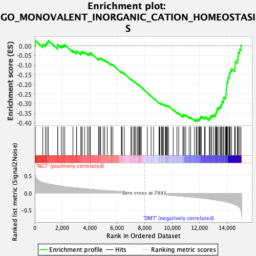

| | | Dataset | Diabetes_collapsed_symbols.Diabetes.cls#NGT_versus_DMT |
| Phenotype | Diabetes.cls#NGT_versus_DMT |
| Upregulated in class | DMT |
| GeneSet | GO_MONOVALENT_INORGANIC_CATION_HOMEOSTASIS |
| Enrichment Score (ES) | -0.39208624 |
| Normalized Enrichment Score (NES) | -1.6488534 |
| Nominal p-value | 0.0020325202 |
| FDR q-value | 1.0 |
| FWER p-Value | 0.996 |
Table: GSEA Results Summary

Fig 1: Enrichment plot: GO_MONOVALENT_INORGANIC_CATION_HOMEOSTASIS
Profile of the Running ES Score & Positions of GeneSet Members on the Rank Ordered List
| PROBE | DESCRIPTION
(from dataset) | GENE SYMBOL | GENE_TITLE | RANK IN GENE LIST | RANK METRIC SCORE | RUNNING ES | CORE ENRICHMENT | | 1 | ATP6V0A2 | na | | | 33 | 0.535 | 0.0273 | No |
| 2 | ATP1B3 | na | | | 578 | 0.315 | 0.0082 | No |
| 3 | ATP6V1D | na | | | 770 | 0.294 | 0.0116 | No |
| 4 | ATP4A | na | | | 885 | 0.283 | 0.0196 | No |
| 5 | SLC26A6 | na | | | 984 | 0.274 | 0.0281 | No |
| 6 | ATP6V1G1 | na | | | 1662 | 0.222 | -0.0050 | No |
| 7 | CLCN3 | na | | | 1667 | 0.222 | 0.0070 | No |
| 8 | RAB20 | na | | | 1933 | 0.207 | 0.0007 | No |
| 9 | TFAP2B | na | | | 2062 | 0.199 | 0.0031 | No |
| 10 | AGTR1 | na | | | 2172 | 0.194 | 0.0065 | No |
| 11 | ATP1A3 | na | | | 2776 | 0.166 | -0.0248 | No |
| 12 | AGT | na | | | 3034 | 0.155 | -0.0334 | No |
| 13 | CXorf21 | na | | | 3045 | 0.155 | -0.0256 | No |
| 14 | DRD2 | na | | | 3357 | 0.142 | -0.0386 | No |
| 15 | PDK2 | na | | | 3373 | 0.142 | -0.0318 | No |
| 16 | SLC12A6 | na | | | 3454 | 0.139 | -0.0295 | No |
| 17 | KCNJ10 | na | | | 3626 | 0.132 | -0.0337 | No |
| 18 | ATP6V1B1 | na | | | 3833 | 0.124 | -0.0406 | No |
| 19 | SLC26A4 | na | | | 3941 | 0.120 | -0.0412 | No |
| 20 | SCN7A | na | | | 4036 | 0.117 | -0.0410 | No |
| 21 | ATP6V1E1 | na | | | 4038 | 0.117 | -0.0346 | No |
| 22 | SNX5 | na | | | 4640 | 0.097 | -0.0695 | No |
| 23 | SLC4A4 | na | | | 4655 | 0.096 | -0.0652 | No |
| 24 | SLAMF8 | na | | | 4735 | 0.094 | -0.0653 | No |
| 25 | UPK3A | na | | | 4797 | 0.092 | -0.0643 | No |
| 26 | SLC12A2 | na | | | 4987 | 0.087 | -0.0722 | No |
| 27 | ATP6V0A4 | na | | | 5090 | 0.084 | -0.0744 | No |
| 28 | KCNMA1 | na | | | 5279 | 0.077 | -0.0827 | No |
| 29 | CCKBR | na | | | 5561 | 0.069 | -0.0977 | No |
| 30 | VPS33A | na | | | 5562 | 0.069 | -0.0939 | No |
| 31 | ATP6V0B | na | | | 5681 | 0.066 | -0.0982 | No |
| 32 | ATP6V1F | na | | | 6308 | 0.046 | -0.1376 | No |
| 33 | BCL2 | na | | | 6323 | 0.046 | -0.1360 | No |
| 34 | AVPR1A | na | | | 6360 | 0.045 | -0.1359 | No |
| 35 | KCNJ2 | na | | | 6514 | 0.041 | -0.1438 | No |
| 36 | CYP4A11 | na | | | 7005 | 0.028 | -0.1751 | No |
| 37 | ATP6V1B2 | na | | | 7032 | 0.027 | -0.1754 | No |
| 38 | ATP1B2 | na | | | 7159 | 0.023 | -0.1825 | No |
| 39 | C7 | na | | | 7267 | 0.020 | -0.1886 | No |
| 40 | SLC12A3 | na | | | 7272 | 0.020 | -0.1877 | No |
| 41 | RAB38 | na | | | 7362 | 0.018 | -0.1927 | No |
| 42 | ADORA2A | na | | | 7477 | 0.015 | -0.1995 | No |
| 43 | ATP6V1C1 | na | | | 7548 | 0.013 | -0.2035 | No |
| 44 | SCNN1B | na | | | 7621 | 0.010 | -0.2078 | No |
| 45 | SLC9A8 | na | | | 7630 | 0.010 | -0.2077 | No |
| 46 | DMXL1 | na | | | 7673 | 0.009 | -0.2101 | No |
| 47 | ATP6V0A1 | na | | | 7674 | 0.009 | -0.2096 | No |
| 48 | SLC11A1 | na | | | 7759 | 0.006 | -0.2148 | No |
| 49 | NOX1 | na | | | 8195 | -0.006 | -0.2436 | No |
| 50 | SLC12A8 | na | | | 8465 | -0.014 | -0.2609 | No |
| 51 | COMT | na | | | 8642 | -0.019 | -0.2716 | No |
| 52 | CYP4F12 | na | | | 9046 | -0.031 | -0.2969 | No |
| 53 | TTPA | na | | | 9071 | -0.032 | -0.2968 | No |
| 54 | AVP | na | | | 9101 | -0.033 | -0.2969 | No |
| 55 | SLC12A1 | na | | | 9221 | -0.037 | -0.3029 | No |
| 56 | SLC9A2 | na | | | 9223 | -0.037 | -0.3009 | No |
| 57 | EDNRB | na | | | 9289 | -0.039 | -0.3031 | No |
| 58 | SLC8A1 | na | | | 9320 | -0.040 | -0.3030 | No |
| 59 | NPR1 | na | | | 9365 | -0.041 | -0.3037 | No |
| 60 | SLC4A7 | na | | | 9508 | -0.045 | -0.3107 | No |
| 61 | MAFG | na | | | 9518 | -0.045 | -0.3088 | No |
| 62 | PPT1 | na | | | 9559 | -0.046 | -0.3089 | No |
| 63 | SLC9A1 | na | | | 9616 | -0.048 | -0.3100 | No |
| 64 | KCNA5 | na | | | 9662 | -0.050 | -0.3103 | No |
| 65 | SLC4A1 | na | | | 9728 | -0.051 | -0.3119 | No |
| 66 | TP53 | na | | | 10076 | -0.063 | -0.3316 | No |
| 67 | ATP6V1G2 | na | | | 10349 | -0.073 | -0.3458 | No |
| 68 | SLC4A10 | na | | | 10479 | -0.078 | -0.3502 | No |
| 69 | ADORA1 | na | | | 10786 | -0.088 | -0.3658 | No |
| 70 | SCNN1A | na | | | 10793 | -0.088 | -0.3613 | No |
| 71 | TAC1 | na | | | 10806 | -0.089 | -0.3573 | No |
| 72 | SLC12A9 | na | | | 10887 | -0.092 | -0.3576 | No |
| 73 | MC3R | na | | | 10990 | -0.095 | -0.3592 | No |
| 74 | ATP1A2 | na | | | 11232 | -0.103 | -0.3696 | No |
| 75 | SLC4A2 | na | | | 11349 | -0.107 | -0.3715 | No |
| 76 | NEDD4L | na | | | 11627 | -0.118 | -0.3835 | No |
| 77 | OXT | na | | | 11756 | -0.123 | -0.3853 | Yes |
| 78 | SLC9A7 | na | | | 11817 | -0.126 | -0.3824 | Yes |
| 79 | GNAI2 | na | | | 11928 | -0.130 | -0.3826 | Yes |
| 80 | SCNN1G | na | | | 11985 | -0.132 | -0.3791 | Yes |
| 81 | SLC12A5 | na | | | 12029 | -0.134 | -0.3746 | Yes |
| 82 | TMPRSS3 | na | | | 12072 | -0.136 | -0.3699 | Yes |
| 83 | RHCG | na | | | 12128 | -0.138 | -0.3660 | Yes |
| 84 | ATP6V1A | na | | | 12357 | -0.149 | -0.3730 | Yes |
| 85 | SLC4A3 | na | | | 12406 | -0.151 | -0.3679 | Yes |
| 86 | CA7 | na | | | 12711 | -0.167 | -0.3790 | Yes |
| 87 | ATP1B1 | na | | | 12731 | -0.168 | -0.3710 | Yes |
| 88 | ATP4B | na | | | 12823 | -0.173 | -0.3676 | Yes |
| 89 | ATP1A1 | na | | | 12861 | -0.176 | -0.3604 | Yes |
| 90 | CYP11B2 | na | | | 12993 | -0.184 | -0.3590 | Yes |
| 91 | ATP6V0D1 | na | | | 13131 | -0.192 | -0.3576 | Yes |
| 92 | NPPB | na | | | 13164 | -0.194 | -0.3491 | Yes |
| 93 | ATP12A | na | | | 13224 | -0.198 | -0.3421 | Yes |
| 94 | MAPK1 | na | | | 13258 | -0.200 | -0.3333 | Yes |
| 95 | CA2 | na | | | 13284 | -0.202 | -0.3239 | Yes |
| 96 | GRN | na | | | 13387 | -0.209 | -0.3192 | Yes |
| 97 | MAPK3 | na | | | 13499 | -0.216 | -0.3147 | Yes |
| 98 | CORIN | na | | | 13556 | -0.220 | -0.3064 | Yes |
| 99 | SLC12A7 | na | | | 13613 | -0.223 | -0.2978 | Yes |
| 100 | SLC9A6 | na | | | 13641 | -0.225 | -0.2872 | Yes |
| 101 | CLN6 | na | | | 13751 | -0.234 | -0.2816 | Yes |
| 102 | SLC9A5 | na | | | 13752 | -0.234 | -0.2687 | Yes |
| 103 | CFTR | na | | | 13871 | -0.244 | -0.2632 | Yes |
| 104 | SLC12A4 | na | | | 13907 | -0.248 | -0.2518 | Yes |
| 105 | KCNH2 | na | | | 13938 | -0.252 | -0.2400 | Yes |
| 106 | SLC9A3 | na | | | 13943 | -0.252 | -0.2264 | Yes |
| 107 | CYP4F2 | na | | | 13966 | -0.254 | -0.2138 | Yes |
| 108 | ATP6V1H | na | | | 13977 | -0.255 | -0.2004 | Yes |
| 109 | TCIRG1 | na | | | 13994 | -0.257 | -0.1874 | Yes |
| 110 | CLN3 | na | | | 14061 | -0.262 | -0.1774 | Yes |
| 111 | ATP6AP1 | na | | | 14074 | -0.264 | -0.1636 | Yes |
| 112 | SLC4A5 | na | | | 14156 | -0.273 | -0.1541 | Yes |
| 113 | TM9SF4 | na | | | 14184 | -0.276 | -0.1406 | Yes |
| 114 | AVPR2 | na | | | 14241 | -0.284 | -0.1288 | Yes |
| 115 | CLIC4 | na | | | 14327 | -0.294 | -0.1183 | Yes |
| 116 | EDN1 | na | | | 14552 | -0.326 | -0.1153 | Yes |
| 117 | CLN5 | na | | | 14585 | -0.331 | -0.0992 | Yes |
| 118 | DRD3 | na | | | 14592 | -0.333 | -0.0813 | Yes |
| 119 | ATP6V0C | na | | | 14745 | -0.365 | -0.0713 | Yes |
| 120 | SLC4A8 | na | | | 14797 | -0.378 | -0.0540 | Yes |
| 121 | SLC26A3 | na | | | 14828 | -0.385 | -0.0348 | Yes |
| 122 | PDK4 | na | | | 14922 | -0.417 | -0.0181 | Yes |
| 123 | AGTR2 | na | | | 15013 | -0.488 | 0.0028 | Yes |
Table: GSEA details [plain text format]
Fig 2: GO_MONOVALENT_INORGANIC_CATION_HOMEOSTASIS
Blue-Pink O' Gram in the Space of the Analyzed GeneSet
Fig 3: GO_MONOVALENT_INORGANIC_CATION_HOMEOSTASIS: Random ES distribution
Gene set null distribution of ES for GO_MONOVALENT_INORGANIC_CATION_HOMEOSTASIS